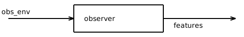

Block¶
This method gathers base implementations for blocks to be used in pipeline control design.
It implements:
the concept of blocks that can be connected to a gym environment
the base controller block
the base observer block
- class gym_jiminy.common.bases.block_bases.BlockInterface(name, env, update_ratio=1, **kwargs)[source]¶
Bases:
ABC,Generic[BlockStateT,BaseObsT,BaseActT]Base class for blocks used for pipeline control design. Blocks can be either observers and controllers.
Warning
A block may be stateful. In such a case, _initialize_state_space and get_state must be overloaded accordingly. The internal state will be added automatically to the observation space of the environment.
Initialize the block interface.
It defines some proxies for fast access, then it initializes the internal state space of the block and allocates memory for it.
- ..warning::
All blocks (observers and controllers) must be an unique name within a given pipeline. In practice, it will be impossible to plug a given block to an existing pipeline if the later already has one block of the same type and name. The user is responsible to take care it never happens.
- Parameters:
name – Name of the block.
env – Environment to connect with.
update_ratio – Ratio between the update period of the high-level controller and the one of the subsequent lower-level controller.
kwargs – Extra keyword arguments that may be useful for mixing multiple inheritance through multiple inheritance.
- state_space: Space[BlockStateT]¶
- env: JiminyEnvInterface[BaseObsT, BaseActT]¶
- abstract _setup()[source]¶
Configure the internal state of the block.
Note
The environment itself is not necessarily directly connected to this block since it may actually be connected through another block instead.
Note
The environment to ultimately control is already fully initialized at this point, so that all its internal buffers is up-to-date, but no simulation is running yet. As a result, it is still possible to update the configuration of the simulator, and for example, to register some extra variables to monitor the internal state of the block.
- Return type:
None
- abstract _initialize_state_space()[source]¶
Configure the internal state space of the controller.
- Return type:
None
- abstract get_state()[source]¶
Get the internal state space of the controller.
- Return type:
BlockStateT
- abstract property fieldnames: Mapping[str, StructNested[ValueT]] | Iterable[StructNested[ValueT]] | str¶
Blocks fieldnames for logging.
- _abc_impl = <_abc_data object>¶
- _is_protocol = False¶
- class gym_jiminy.common.bases.block_bases.BaseObserverBlock(*args, **kwargs)[source]¶
Bases:
ObserverInterface[ObsT,BaseObsT],BlockInterface[BlockStateT,BaseObsT,BaseActT],Generic[ObsT,BlockStateT,BaseObsT,BaseActT]Base class to implement observe that can be used compute observation features of a BaseJiminyEnv environment, through any number of lower-level observer.
Formally, an observer is a defined as a block mapping the observation space of the preceding observer, if any, and directly the one of the environment ‘obs_env’, to any observation space ‘features’. It is more generic than estimating the state of the robot.
The update period of the observer is the same than the simulation timestep of the environment for now.
Initialize the observer interface.
- Parameters:
args – Extra arguments that may be useful for mixing multiple inheritance through multiple inheritance.
kwargs – Extra keyword arguments. See ‘args’.
- observation: ObsT¶
- _setup()[source]¶
Configure the internal state of the block.
Note
The environment itself is not necessarily directly connected to this block since it may actually be connected through another block instead.
Note
The environment to ultimately control is already fully initialized at this point, so that all its internal buffers is up-to-date, but no simulation is running yet. As a result, it is still possible to update the configuration of the simulator, and for example, to register some extra variables to monitor the internal state of the block.
- Return type:
None
- property get_fieldnames: Mapping[str, StructNested[ValueT]] | Iterable[StructNested[ValueT]] | str¶
Get mapping between each scalar element of the observation space of the observer block and the associated fieldname for logging.
It is expected to return an object with the same structure than the observation space, but having lists of string as leaves. Generic fieldnames are used by default.
- _abc_impl = <_abc_data object>¶
- abstract _initialize_observation_space()¶
Configure the observation space.
- Return type:
None
- abstract _initialize_state_space()¶
Configure the internal state space of the controller.
- Return type:
None
- _is_protocol = False¶
- abstract property fieldnames: Mapping[str, StructNested[ValueT]] | Iterable[StructNested[ValueT]] | str¶
Blocks fieldnames for logging.
- abstract get_state()¶
Get the internal state space of the controller.
- Return type:
BlockStateT
- abstract refresh_observation(measurement)¶
Compute observed features based on the current simulation state and lower-level measure.
- Parameters:
measurement (BaseObsT) – Low-level measure from the environment to process to get higher-level observation.
- Return type:
None
- observation_space: Space¶
- env: JiminyEnvInterface[BaseObsT, BaseActT]¶
- state_space: Space[BlockStateT]¶
{kind=link}
- class gym_jiminy.common.bases.block_bases.BaseControllerBlock(*args, **kwargs)[source]¶
Bases:
ControllerInterface[ActT,BaseActT],BlockInterface[BlockStateT,BaseObsT,BaseActT],Generic[ActT,BlockStateT,BaseObsT,BaseActT]Base class to implement controller that can be used compute targets to apply to the robot of a BaseJiminyEnv environment, through any number of lower-level controllers.

Formally, a controller is defined as a block mapping any action space ‘act_ctrl’ to the action space of the subsequent controller ‘cmd_ctrl’, if any, and ultimately to the one of the associated environment ‘act_env’, ie the motors efforts to apply on the robot.
The update period of the controller must be higher than the control update period of the environment, but both can be infinite, ie time-continuous.
Initialize the controller interface.
- Parameters:
args – Extra arguments that may be useful for mixing multiple inheritance through multiple inheritance.
kwargs – Extra keyword arguments. See ‘args’.
- _abc_impl = <_abc_data object>¶
- abstract _initialize_action_space()¶
Configure the action space.
- Return type:
None
- abstract _initialize_state_space()¶
Configure the internal state space of the controller.
- Return type:
None
- _is_protocol = False¶
- abstract compute_command(action)¶
Compute the action to perform by the subsequent block, namely a lower-level controller, if any, or the environment to ultimately control, based on a given high-level action.
Note
The controller is supposed to be already fully configured whenever this method might be called. Thus it can only be called manually after reset. This method has to deal with the initialization of the internal state, but _setup method does so.
Note
The user is expected to fetch by itself the observation of the environment if necessary to carry out its computations by calling self.env.observation. Beware it will NOT contain any information provided by higher-level blocks in the pipeline.
- Parameters:
target – Target to achieve by means of the output action.
action (ActT) –
- Returns:
Action to perform.
- Return type:
BaseActT
- compute_reward(done, truncated, info)¶
Compute the reward related to a specific control block.
For the corresponding MDP to be stationary, the computation of the reward is supposed to involve only the transition from previous to current state of the simulation (possibly comprising multiple agents) under the ongoing action.
By default, it returns 0.0 no matter what. It is up to the user to provide a dedicated reward function whenever appropriate.
Warning
Only returning an aggregated scalar reward is supported. Yet, it is possible to update ‘info’ by reference if one wants for keeping track of individual reward components or any kind of extra info that may be helpful for monitoring or debugging purposes.
- Parameters:
done (bool) – Whether the episode has reached one of terminal states of the MDP at the current step. This flag can be used to compute a specific terminal reward.
truncated (bool) – Whether a truncation condition outside the scope of the MDP has been satisfied at the current step. This flag can be used to adapt the reward.
info (Dict[str, Any]) – Dictionary of extra information for monitoring.
- Returns:
Aggregated reward for the current step.
- Return type:
- abstract property fieldnames: Mapping[str, StructNested[ValueT]] | Iterable[StructNested[ValueT]] | str¶
Blocks fieldnames for logging.
- abstract get_state()¶
Get the internal state space of the controller.
- Return type:
BlockStateT
- action_space: Space¶
- env: JiminyEnvInterface[BaseObsT, BaseActT]¶
- state_space: Space[BlockStateT]¶
- _setup()[source]¶
Configure the internal state of the block.
Note
The environment itself is not necessarily directly connected to this block since it may actually be connected through another block instead.
Note
The environment to ultimately control is already fully initialized at this point, so that all its internal buffers is up-to-date, but no simulation is running yet. As a result, it is still possible to update the configuration of the simulator, and for example, to register some extra variables to monitor the internal state of the block.
- Return type:
None
- property get_fieldnames: Mapping[str, StructNested[ValueT]] | Iterable[StructNested[ValueT]] | str¶
Get mapping between each scalar element of the action space of the controller block and the associated fieldname for logging.
It is expected to return an object with the same structure than the action space, but having lists of string as leaves. Generic fieldnames are used by default.